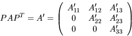
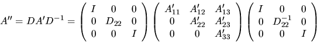

Next: Invariant Subspaces and Condition
Up: Nonsymmetric Eigenproblems
Previous: Eigenvalues, Eigenvectors and Schur
Contents
Index
The routine xGEBAL
may be used to balance the
matrix A prior to reduction to Hessenberg form. Balancing involves two
steps, either of which is optional:
- first, xGEBAL
attempts to permute A by a similarity transformation to
block upper triangular form:

where P is a permutation matrix and A'11 and A'33 are
upper triangular.
Thus the matrix is already in Schur form outside the
central diagonal block A'22 in rows and columns ILO to IHI.
Subsequent operations by xGEBAL, xGEHRD or xHSEQR need only be applied to
these rows and columns; therefore ILO and IHI are passed as arguments to
xGEHRD and
xHSEQR. This can save a significant amount of
work if ILO > 1 or IHI < n.
If no suitable permutation can be found (as is very often the case),
xGEBAL sets ILO = 1 and IHI = n, and A'22 is
the whole of A.
- secondly, xGEBAL applies a diagonal similarity transformation to
A'
to make the rows and columns of A'22
as close in norm in possible:

This can improve the
accuracy of later processing in some cases; see subsection 4.8.1.2.
If A was balanced by xGEBAL, then eigenvectors computed by subsequent
operations are eigenvectors of the balanced matrix A'';
xGEBAK must then be called
to transform them back to eigenvectors of the original matrix A.
Next: Invariant Subspaces and Condition
Up: Nonsymmetric Eigenproblems
Previous: Eigenvalues, Eigenvectors and Schur
Contents
Index
Susan Blackford
1999-10-01